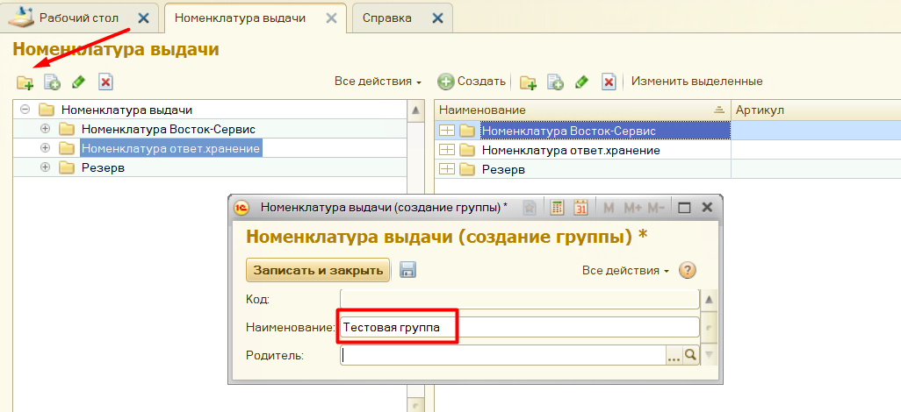
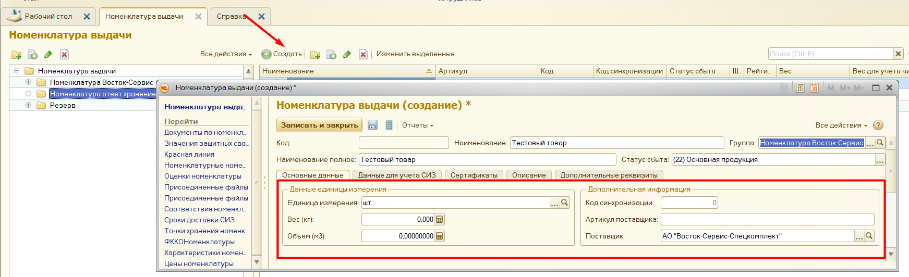
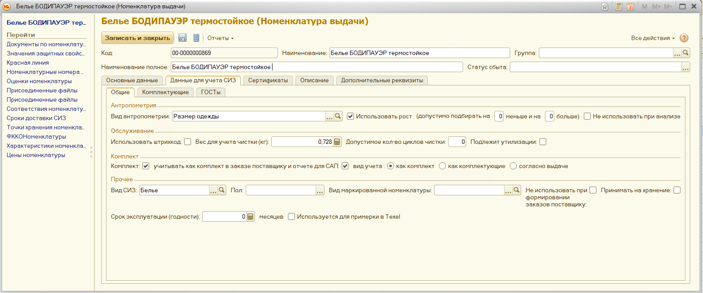
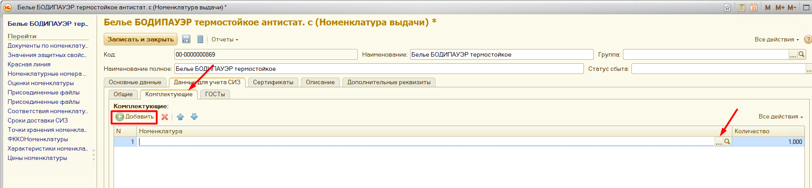
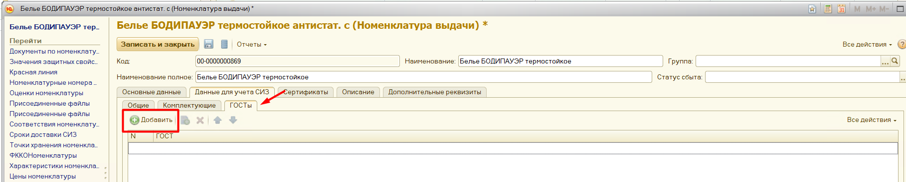
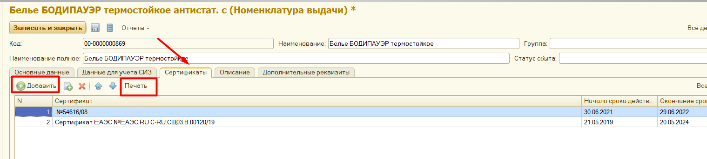
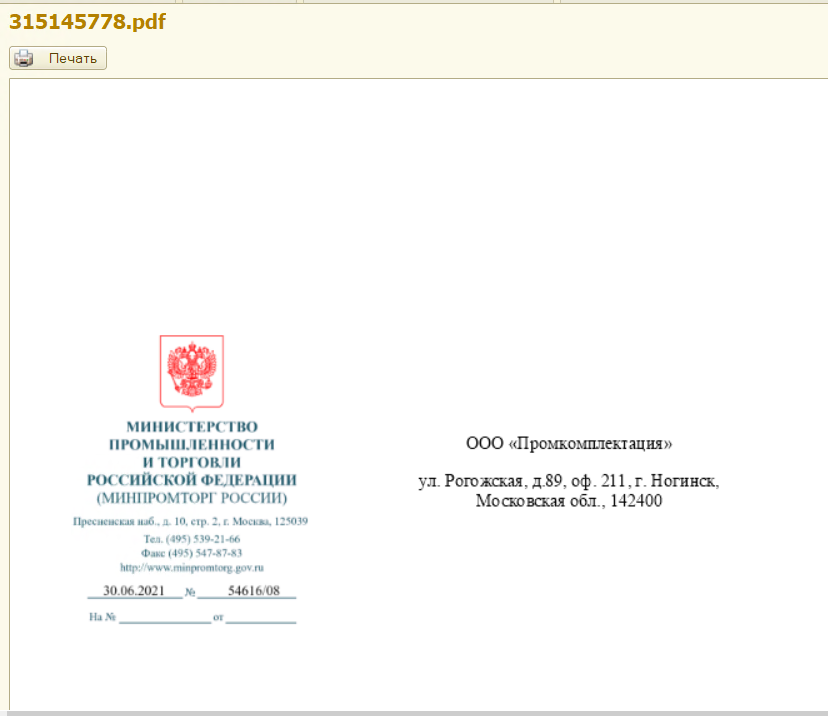

Справочник «Номенклатура выдачи» находится в разделе «Предприятие». Структура данных по указанной номенклатуре выстраивается в виде иерархического перечня, сгруппированного по видам СИЗ. Для добавления новой номенклатуры необходимо создать группу, нажав на кнопку «Создать новую группу», ввести наименование и нажать кнопку «Записать и закрыть».

Для создания позиции с СИЗ, выделите курсором нужную группу и нажмите кнопку «Создать». В открывшемся окне заполните поля «Наименование», «Единица измерения СИЗ», при необходимости можно ввести вес и объем изделия, артикул. Заполнение поля «Поставщик» является обязательным. Поле «Код синхронизации» следует заполнять, если планируется производить загрузку из каких-либо других подсистем, – по этому коду будет происходить синхронизация.

Далее необходимо перейти во вкладку «Данные для учета СИЗ» и заполнить:
Антропометрия:
1. Вид антропометрии – размеры, которые будут учитываться при подборе данного СИЗ.
2. Галочка «Использовать рост» – устанавливается, если необходимо учитывать рост при подборе данного вида спецодежды или средств защиты (белье, костюмы и т.д.). Так же можно указать, на сколько размеров больше или меньше можно подбирать номенклатуру.
3. Галочка «Не использовать при анализе» – устанавливается, чтобы при анализе потребности не учитывался вид антропометрического свойства, например, размер обуви. Таким образом, сотрудникам без указания антропометрии при формировании заявки будет подбираться данный вид СИЗ, без указания размера.
Обслуживание:
1. "Использовать штрихкод" - устанавливается, если необходимо распечатывать этикетки на СИЗы.
2. Вес для учета чистки (кг) - проставляется в случае, если на предприятии осуществляется чистка спецодежды.
3. Допустимое количество циклов чистки - проставляется при необходимости осуществлять контроль за количеством чисток спецодежды. Если проставить кол-во допустимых чисток и включить контроль за кол-вом чисток в организации, программа выдаст сообщение при передаче в чистку большее количество раз.
4. Подлежит утилизации – данная номенклатура
Комплект:
1. Комплект – проставляется, если данная номенклатура содержит комплектующие. После установки галочки добавляется еще одна вкладка – «комплектующие» (см ниже) Комплектом может быть, например, костюм и, в свою очередь, состоять из брюк и куртки.
2. Учитывать как комплект в заказе поставщику и отчете для САП – при проставленной галочке при формировании заказов поставщику номенклатура будет анализироваться как комплект. Так же в отчете для САП номенклатура будет выводиться комплектом
3. Вид учета – позволяет выбрать то, как номенклатура будет учитываться для перехода права собственности:
a. Как комплект - в ППС номенклатура будет попадать комплектом, не зависимо от того, как была отражена в документе выдачи;
b. Как комплектующее - в ППС номенклатура будет попадать по комплектующим, не зависимо от того, как была отражена в документе выдачи;
c. Согласно выдаче - в ППС номенклатура будет попадать по комплектам или по комплектующим, в зависимости от того, как была отражена в документе выдачи
Прочее:
1. Вид СИЗ – выбирается из списка;
2. Пол – в этом случае номенклатура будет подбираться только женщинам или только мужчинам, в зависимости от присвоенного номенклатуре пола.
3. Вид маркированной номенклатуры – устанавливается, если данная номенклатура подлежит маркировке.
4. Не использовать при формировании заказов поставщику – данная номенклатура не будет подбираться сотрудникам для заказа поставщику
5. Принимать на хранение – данную номенклатуру можно сдавать на хранение
6. Срок эксплуатации(годности) – срок годности номенклатуры, указывается в месяцах
7. Используется для примерки в Texel – номенклатура будет доступна в виртуальной примерочной

После заполнения всех нужных полей нажмите кнопку «Записать и закрыть».
Если при создании позиции номенклатуры выдачи во вкладке «Данные для учета СИЗ» - установить флажок «Комплект», то появится дополнительная вкладка «Комплектующие», на которой можно внести составляющие комплекта.

Для добавления комплектующих нажмите кнопку «Добавить», затем в появившейся строке нажмите <...> и выберите из списка номенклатуры нужный элемент комплекта. Чтобы добавить еще одну составляющую комплекта, снова нажмите кнопку «Добавить» и повторите операцию. Затем укажите количество, необходимое для сборки комплекта, для каждой его части.
На вкладке «ГОСТы» можно добавить ГОСТ ввести строкой либо выбрав из справочника

Во вкладке «Сертификаты» можно занести различные документы, связанные с данным товаром (сертификаты, протоколы испытаний и т.д.). При желании, можно прикрепить документ или картинку. Если документы уже прикреплены, есть возможность просмотреть их и вывести для печати с помощью кнопки «Печать файлов сертификата».


После ввода всех необходимых данных по СИЗ необходимо нажать кнопку «Записать и закрыть».